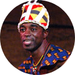

<!DOCTYPE html>
<html lang="en" dir="ltr">
</html>
  <head>
    <meta charset="utf-8">
    <title>Samba Diallo</title>
    <link rel="stylesheet" href="css/styles.css">
    <link rel="icon" href="favicon.ico">
    <link href="https://fonts.googleapis.com/css2?family=Merriweather&family=Montserrat&family=Sacramento&display=swap" rel="stylesheet">
  </head>
  <body>
    <div class="top-container">
      
      <h1>I'm  Samba.</h1>
      <h2>a <span class="web">pro</span>grammer</h2>
        
          
    </div><!--end of top container-->
    <div class="middle-container">
      <div class="profile">
        
        <h2>Hello.</h2>

        <p class="intro">I am a web developer and choreographer.<br />I ♥ teaching African dance and drumming. I am the founder of Afro Fit: A dance fitness program.</p>
      </div><!--end of profile-->
      <hr>
      <div class="skills">
        <h2>My Skills.</h2>
        <div class="skill-row">
          
        <!-- <a  class="author-img"href="Icons made by <a href="https://www.flaticon.com/authors/freepik" title="Freepik">Freepik</a> from <a href="https://www.flaticon.com/" title="Flaticon"> www.flaticon.com</a>"-->
          <h3>Hand Code html</h3>
          <p> I hand coded html and css website for my clients.
          I completed a year of intensive website course at the Kennesaw State University. I am efficient with the W3C standards-compliant, cross-browser hand-coder.
          Also knowledge in adobe photoshop.</p>
        </div><!--end of skills-->
        <div class="skill-row">
          
          <h3>Cultural Art Education</h3>
          <p>But my best skill is actually performing art.<br /> I am an international dance choreographer and actor.<br />
          I lecture at University, teach, and perform traditonal Afican masks dance for organization and schools.</p>
          
        </div><!--end of skill row-->
      </div><!--end of skills-->
      <hr>
      <div class="contact-me">
        <h2>Get In Touch</h2>
        <h3>Web design or Cultural Programs.</h3>
        <p class="contact-message">You can contact us for your future designs: business card, website, flyers.
        Or just book us for your next University, School or Community cultural programs.</p>
        <a class="btn" href="mailto:samba@ayokaproduction.com">CONTACT ME</a>
      </div><!--end of contact me-->
    </div><!--end of middle container-->
    <div class="bottom-container">
      <a class="footer-link" href="https://www.linkedin.com/in/samba-diallo-6a454659">LinkedIn</a>
      <a class="footer-link" href="https://twitter.com/dsamfly">Twitter</a>
      <a class="footer-link" href="http://www.myonlineportfolio.net/index.html">Website</a>
      <p class="copyright">© 2020 Samba Diallo @ Ayoka Production.</p>
    </div><!--end of bottom container-->


  </body>
</html>
